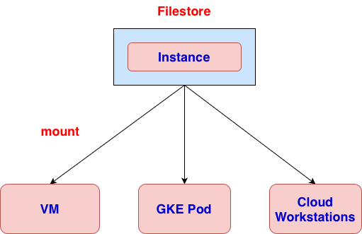

# install package sudo apt update sudo apt install -y nfs-common # create mount folder sudo mkdir -p /mnt/filestore # mount instance sudo mount -o nolock instance_ip:/file_share_name /mnt/filestore # change ownership sudo chown -R $USER:$USER /mnt/filestore # create a link ln -s /mnt/filestore ~/filestore